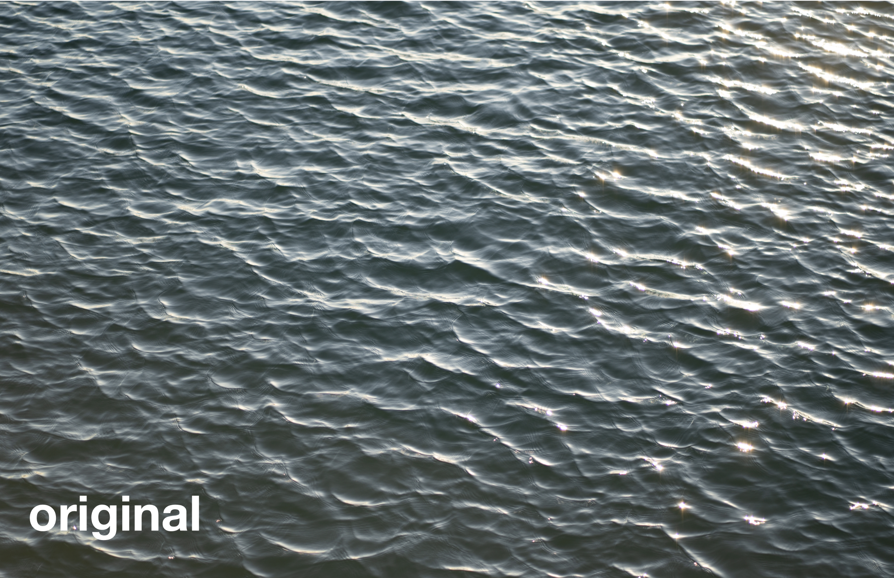
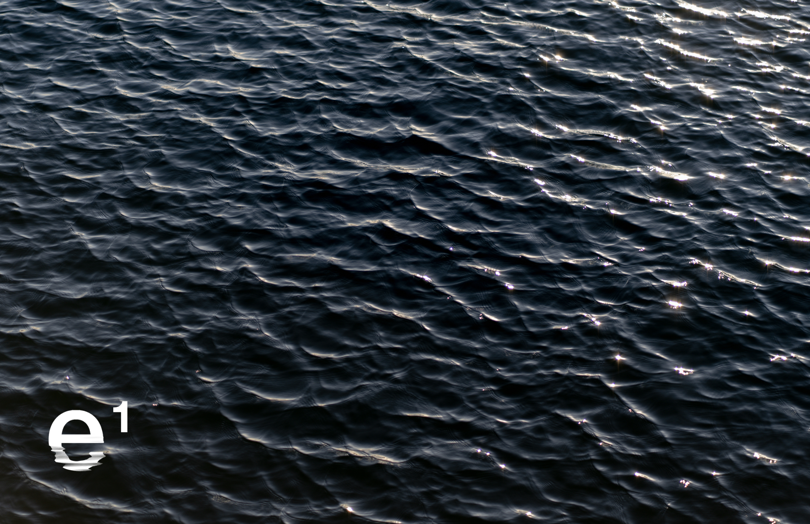
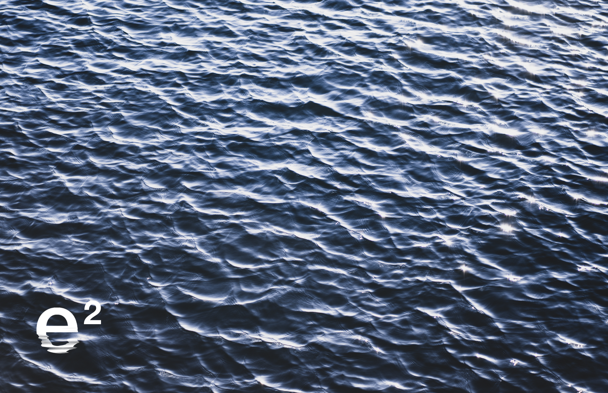
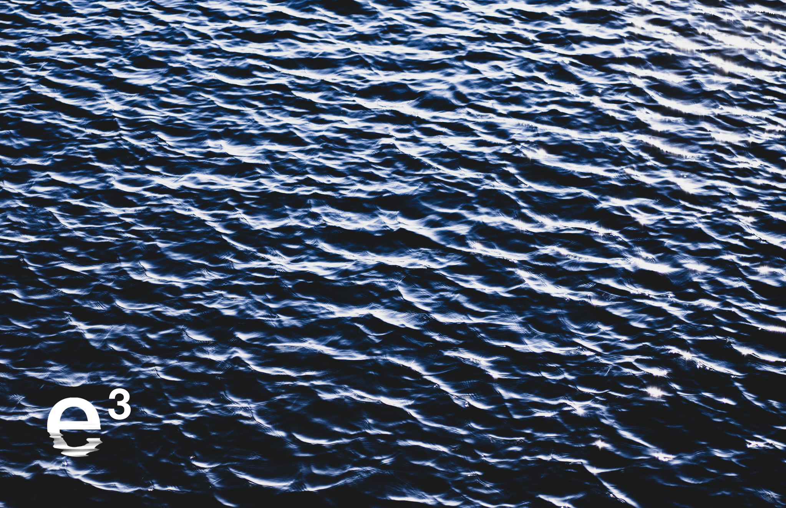
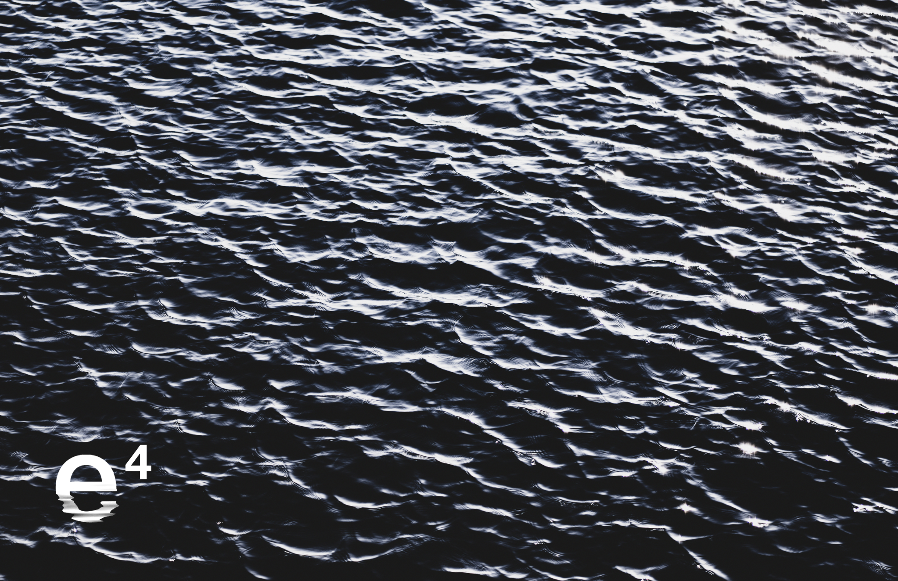

abdz.lightroom preset
Escuro in Portuguese means dark, blackish or closer to black than white.
Escuro is also the name of the new set of Lightroom CC presets created with the intent of turning photos of ocean water in its various states into a minimalistic image. The effect is achieved by reducing the brightness and increasing the contrast of the highlights that really matter.
Whats' included
Escuro is composed of a set of 4 presets, e1, e2, e3, e4. Each one of them will give you a different look to your photo. The only thing is common is the dark theme. Below you can see them in action.





Examples
Photos taken by me and available in full resolution on Unsplash


Get yours now
Get Escuro Lightroom CC preset
For more photos, check out my Unsplash page. With this Lightroom preset abdz. now offers 2 presets, Urbano and Escuro. Each one of them is focused exclusively on a specific use case.
Copyright Steale LLC